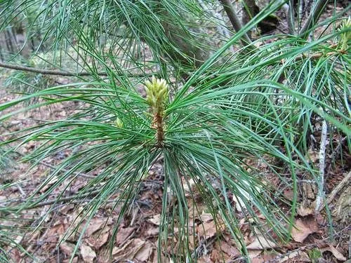

乔木 · 植物界
红松 Pinus koraiensis

中国东北针阔混交林中的高大松树，球果硕大、松子可食，是重要的用材与坚果经济树种，寿命可达数百年。
- 分类
- 门裸子植物门纲松柏纲目松柏目科松科属松属
- 栖息环境
- 海拔 300–1800 米的长白山、小兴安岭针阔混交林，喜光耐寒
- 地理分布
- 中国东北长白山与小兴安岭，俄罗斯远东、朝鲜半岛、日本也有分布
- 保护级别
- IUCN 易危（VU）；中国国家二级保护野生植物
物种志
红松为常绿针叶乔木，高可达 40 m，胸径可达 1.5 m，树皮灰褐色、呈鳞片状纵裂；针叶 5 针一束，长 6–12 cm，粗硬而稍弯曲，在枝端丛生。雌雄同株，雄球花黄色、聚生于新枝下部，雌球花绿褐色、生于枝顶；球果卵状圆锥形，长 9–20 cm，成熟时黄褐色，鳞片开裂后散出无翅的种子，即人们熟悉的松子。
红松分布于中国东北长白山、小兴安岭及俄罗斯远东、朝鲜半岛、日本，是温带针阔混交林的主要树种，喜光、耐寒，适宜深厚肥沃、排水良好的暗棕壤，生长缓慢，寿命可达 500 年。木材轻软、纹理通直、耐腐，是建筑、造船与家具的优良用材；松子富含脂肪与蛋白质，是著名的坚果；树皮可提取栲胶。由于长期采伐，野生红松资源减少，被列为国家二级保护野生植物。
形态与习性
- 株高可达 40 m，胸径可达 1.5 m
- 花期5–6 月，雄球花黄色
- 球果成熟翌年 9–10 月，长 9–20 cm
- 光照喜光，幼树耐侧方庇荫
- 水分喜湿润，年降水量 600–1000 mm
- 土壤深厚肥沃的暗棕壤
- 主要用途建筑与家具用材、松子食用、树皮提取栲胶
趣味知识
- 红松的针叶五针一束，球果硕大，种子就是人们熟悉的松子。
- 红松生长缓慢，一棵结实丰产的红松往往需要上百年时间。
- 东北的原始红松林是温带针阔混交林的典型代表，为紫貂等动物提供栖息地。
- 红松球果成熟后鳞片张开，无翅的松子主要靠重力与动物搬运传播。
生态关系
- 传播 ← 松鼠 松鼠贮食帮助红松传播种子